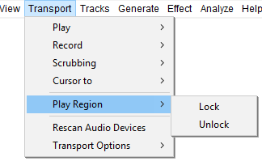

Transport Menu: Play Region
- Click, or hover, on any menu item in the image to read about that command. Skip the image
- 
Lock
Activating this menu item locks standard playback to the current position of the playback region (or to the current position of the Quick-Play region). This locked position is indicated by a red region in the Timeline instead of the normal gray region in the Timeline. The locked region is then always used when starting playback with a play button or with Space, instead of starting from the cursor or region position in the waveform. See Play Region Lock on the Timeline page for details.
This menu item is only active when there is a playback region or Quick-Play region in the Timeline displaying in normal gray (unlocked) color.
Unlock
Removes the Play Region Lock. This menu item is only active when the Lock is already active (the locked region shows in red color in the Timeline).
Play Region Lock or Unlock may be performed even when the track is playing, recording or paused.